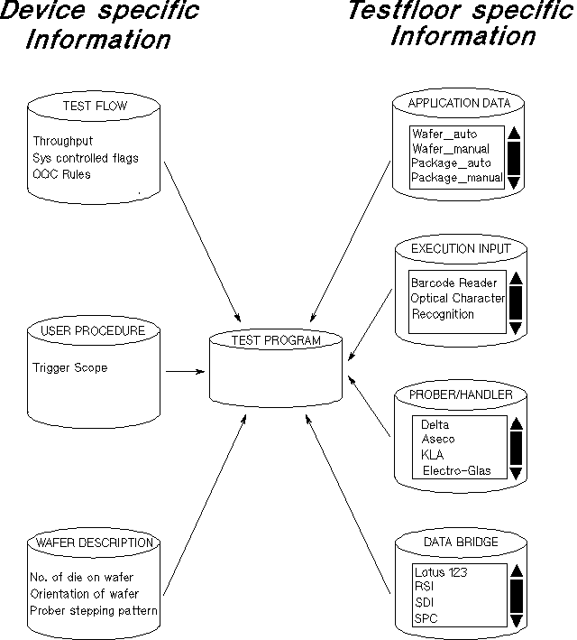

Test Program Introduction
SmarTest lets you develop, debug and execute complete Production Tests.
The Production Test consists of,
- a Test Program
- an environment where device tests can be managed, for example, a Test Program "pool" from which tests can be assigned (by a supervisor) to operators
- an environment where operators can start and execute production tests
The test program itself comprises a set of,
- device-specific information;
- a Testflow...
a combination of "test suites" and "bins" (see Testflow components for exact explanation of terms) with their associated control flags, debug flags and binning rules.
- a User Procedure directory (or Command Set - see note later)...
where you can put a piece of code written in C or generated by Advantest's Virtual Engineering Environment (VEE), that can be called via the Testsuite dialog box (see later) from within the testflow. It would typically be used for external measurement instruments.
- a Wafer Description file...
containing details about the wafer geometry and orientation, and (optionally) the contents of a prober setup-command file. This information enables the software to generate a Wafer Map Result Display and can be used to control the wafer prober.
- a Testflow...
- and, testfloor-specific information;
- which Application you use...
you select a file that defines physically how the production test works, including, how and when data is to be entered during a test, how and when handler/prober access takes place, and how and when results are logged.
- which Prober/Handler you use...
You select a directory (or Command Set - see note below) containing different procedures and programs for your device handling and wafer probing, used by the application file.
- an Execution Input directory (or Command Set)...
which is used by the application file to interface certain data coming from/to the production process with either another process or the outside world. This is for non-standard protocol/devices such as a barcode reader, an optical character recognition system or for a custom operator interface.
- a Data Bridge directory (or Command Set)...
which contains one or more data-formatting routines that access generic data format files and convert them into other formats (for linking to databases or statistical analysis packages, for example). The data in these files is determined by the application file, and flags set in the testflow.
Note The Command Set is the generic name given to a directory and all its files, that are used by the application as part of the test program. The default directory for the command sets is /opt/hp93000/soc , however, you can define your own directory path for the sets.Note The following are all command sets: - the user procedure - the handler/prober - the execution input - the data bridge
- which Application you use...
The figure below shows the various elements that comprise a test program.
